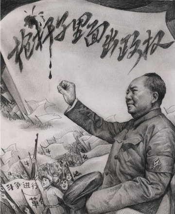

Tài liệu gốc: http://dajiyuan.com/gb/4/11/23/n725597.htm
|
 |
Khi nói về “bạo chính”, người Trung Quốc thường nghĩ đến Tần Thủy Hoàng (259-210 trước CN), Hoàng đế đầu tiên của Triều đại nhà Tần, người đã ra phán quyết đốt sách triết học và chôn sống các Nho sĩ.
Sự tàn bạo của vua Tần đối với dân chúng xuất phát từ chính sách: “Tất cả tài nguyên trong thiên hạ đều là để phụng sự triều đình”. [1] Chính sách này có bốn khía cạnh chính: (a) đánh thuế cực kỳ nặng; (b) lãng phí nhân công cho các công trình nhằm để tự ca ngợi Hoàng đế; (c) tra tấn tàn bạo dưới các luật lệ hà khắc và trừng phạt cả những gia nhân và hàng xóm của phạm nhân; (d) và kiểm soát tư tưởng nhân dân bằng cách phong tỏa tất cả các con đường tự do tư tưởng và biểu đạt quan điểm thông qua việc đốt sách và thậm chí chôn sống các Nho sĩ. Dưới thời Tần Thủy Hoàng, Trung Quốc có khoảng mười triệu dân, vậy mà triều đình nhà Tần đã sử dụng hơn hai triệu người để phục dịch. Tần Thủy Hoàng đã áp dụng luật lệ hà khắc của mình đối với giới trí thức, cấm tự do tư tưởng trên diện rộng. Trong thời kỳ cai trị của vua Tần, hàng ngàn Nho sĩ và quan lại dám phê phán triều đình đã bị giết chết.
Sự tàn bạo của vua Tần đối với dân chúng xuất phát từ chính sách: “Tất cả tài nguyên trong thiên hạ đều là để phụng sự triều đình”. [1] Chính sách này có bốn khía cạnh chính: (a) đánh thuế cực kỳ nặng; (b) lãng phí nhân công cho các công trình nhằm để tự ca ngợi Hoàng đế; (c) tra tấn tàn bạo dưới các luật lệ hà khắc và trừng phạt cả những gia nhân và hàng xóm của phạm nhân; (d) và kiểm soát tư tưởng nhân dân bằng cách phong tỏa tất cả các con đường tự do tư tưởng và biểu đạt quan điểm thông qua việc đốt sách và thậm chí chôn sống các Nho sĩ. Dưới thời Tần Thủy Hoàng, Trung Quốc có khoảng mười triệu dân, vậy mà triều đình nhà Tần đã sử dụng hơn hai triệu người để phục dịch. Tần Thủy Hoàng đã áp dụng luật lệ hà khắc của mình đối với giới trí thức, cấm tự do tư tưởng trên diện rộng. Trong thời kỳ cai trị của vua Tần, hàng ngàn Nho sĩ và quan lại dám phê phán triều đình đã bị giết chết.
Hãy nhìn lại 55 năm thống khổ của Trung Quốc dưới ách thống trị của ĐCSTQ. Vì triết lý nền tảng của nó là "đấu tranh giai cấp", ĐCSTQ đã không từ một thủ đoạn nào kể từ khi giành được chính quyền để tiến hành việc tiêu diệt các giai cấp và đã dựng nên chế độ thống trị bằng khủng bố của nó thông qua con đường "bạo lực cách mạng". Giết người và tẩy não đã được sử dụng đồng thời để đàn áp bất kể niềm tin nào khác với chủ nghĩa cộng sản. ĐCSTQ đã phát động hết cuộc vận động này đến cuộc vận động khác nhằm tự tôn nó là thần thánh và luôn luôn đúng đắn. Theo đuổi các lý thuyết của nó về đấu tranh giai cấp và bạo lực cách mạng, ĐCSTQ đã cố gắng tiêu diệt những người bất đồng chính kiến và các tầng lớp xã hội đối lập, sử dụng bạo lực và lừa dối để bắt toàn thể nhân dân Trung Quốc trở thành những đầy tớ trung thành và ngoan ngoãn dưới ách nô dịch tàn bạo của nó.
******************
Vừa được ba tháng sau khi thành lập nước Trung Quốc cộng sản, ĐCSTQ đã kêu gọi tiêu diệt giai cấp địa chủ như là một trong những đường lối chỉ đạo cho chương trình cải cách ruộng đất toàn quốc của nó. Khẩu hiệu của Đảng “dân cày có ruộng” đã cổ động tính ích kỷ, tư lợi của những người nông dân không có đất đai, xúi bẩy họ đấu tranh với những người nông dân có sở hữu đất đai bằng bất cứ phương kế gì và không đếm xỉa gì đến khía cạnh đạo đức trong hành động. Chiến dịch cải cách ruộng đất đã đề xuất rõ ràng việc tiêu diệt giai cấp địa chủ, và phân loại dân nông thôn thành nhiều loại trong xã hội. Hai mươi triệu dân nông thôn trên toàn quốc đã bị dán cái nhãn là “địa chủ”, “phú nông”, “phản động“, và “phần tử xấu”. Những người mới bị xã hội ruồng bỏ này đã phải đối mặt với sự phân biệt đối xử, nhục nhã, và mất tất cả các quyền công dân của họ. Khi chiến dịch cải cách ruộng đất vươn rộng đến các vùng xa xôi và các làng của những người dân tộc thiểu số, thì cũng là lúc các tổ chức của Đảng Cộng sản cũng được mở rộng rất nhanh. Các Chi bộ Đảng ở các thành phố nhỏ và các làng mạc đã trải khắp Trung Quốc. Các chi bộ địa phương cũng là những cái miệng để truyền các chỉ thị từ Ban Chấp hành Trung ương Đảng và là tuyến đầu của cuộc đấu tranh giai cấp, kích động nông dân đứng lên chống lại địa chủ. Gần 100.000 địa chủ đã chết trong chiến dịch này. Ở một số vùng, ĐCS và nông dân đã giết toàn bộ gia đình địa chủ, bất kể già hay trẻ, như là một cách để nhổ tận gốc giai cấp địa chủ.
Cùng lúc, ĐCSTQ phát động làn sóng tuyên truyền đầu tiên của mình, tuyên bố rằng “Mao Chủ tịch là vị cứu tinh vĩ đại của nhân dân” và rằng “chỉ có tài năng của ĐCSTQ mới có thể cứu được Trung Quốc”. Trong cải cách ruộng đất, những người nông dân không ruộng đã nhận được những gì họ muốn thông qua chính sách của ĐCSTQ là thu hoạch mà không cần lao động: cưỡng đoạt bằng bất kể cách nào. Nông dân nghèo đã mang ơn ĐCSTQ vì những cải thiện trong cuộc sống của họ và vì vậy đã tin vào sự truyền bá của ĐCSTQ rằng Đảng làm việc vì lợi ích của nhân dân.
Đối với những người chủ của những miếng đất mới đoạt được, những ngày tươi đẹp “dân cày có ruộng” rất ngắn ngủi. Trong vòng hai năm, ĐCSTQ đã áp đặt một số cuộc vận động buộc nông dân ra nhập các tổ chức như các nhóm tương trợ, hợp tác xã sơ cấp, hợp tác xã cao cấp, và công xã nhân dân. Sử dụng khẩu hiệu chỉ trích “phụ nữ có chân bị bó” — nghĩa là, những người chậm chạp — ĐCSTQ đã năm này qua năm khác dẫn dắt và thúc đẩy nông dân “lao vào” chủ nghĩa xã hội. Thóc lúa, bông, và dầu nấu ăn được đặt dưới một hệ thống thu mua thống nhất trên toàn quốc, do đó những sản phẩm nông nghiệp chính không được đưa ra thị trường trao đổi. Thêm vào đó ĐCSTQ đã thiết lập một hệ thống đăng ký nơi cư trú (hộ khẩu), ngăn cản nông dân đến các thành phố tìm việc hay cư ngụ. Những người đăng ký là dân nông thôn không được phép mua thóc lúa tại các cửa hàng nhà nước và con cái của họ bị cấm không được học hành ở thành phố. Con nông dân chỉ có thể là nông dân, biến 360 triệu dân nông thôn trong những năm 1950 thành những công dân hạng hai.
Bắt đầu vào năm 1978, trong năm năm đầu tiên kể từ khi chuyển từ cơ chế lao động tập thể sang cơ chế khoán theo hộ, một số người trong số 900 triệu nông dân đã có cuộc sống tốt hơn, thu nhập của họ cũng tăng lên một chút và địa vị xã hội được cải thiện tương đối. Tuy nhiên lợi ích nhỏ nhoi đó chẳng mấy chốc đã bị mất vì cơ cấu giá cả ưu đãi hàng hóa công nghiệp hơn là hàng hóa nông nghiệp; những người nông dân lại đâm sâu vào cảnh bần cùng một lần nữa. Khoảng cách thu nhập giữa dân thành phố và dân nông thôn đã tăng mạnh mẽ, và sự chênh lệch kinh tế tiếp tục mở rộng. Những người địa chủ và phú nông mới đã xuất hiện trở lại trong những vùng nông thôn. Số liệu từ Tân Hoa Xã đã cho thấy một cách minh bạch rằng từ năm 1997, thu nhập từ những vùng sản xuất thóc lúa chính và thu nhập của hầu hết những hộ gia đình vẫn giữ nguyên, hoặc thậm chí trong một số trường hợp lại giảm đi. Nói cách khác, thu nhập của những người nông dân từ sản xuất nông nghiệp thực tế không tăng. Tỷ lệ giữa thu nhập ở vùng thành thị và nông thôn tăng từ 1.8/1 vào giữa những năm 1980 đến ngày nay là 3.1/1.
******************
Một giai cấp khác mà Đảng Cộng sản Trung Quốc (ĐCSTQ) cũng muốn tiêu diệt là giai cấp tư sản dân tộc sở hữu tài sản ở các thành phố và thị trấn ở nông thôn. Trong khi cải cách công thương ở Trung Quốc, ĐCSTQ tuyên bố rằng giai cấp tư sản và giai cấp công nhân là khác nhau về bản chất: giai cấp thứ nhất là giai cấp bóc lột trong khi giai cấp thứ hai là giai cấp không bóc lột và chống bóc lột. Theo cái lô-gic tà vạy đó: giai cấp tư sản đã được sinh ra để bóc lột và sẽ không ngừng làm thế đến khi nó diệt vong; nó chỉ có thể bị tiêu diệt, không thể cải tạo. Dưới tiền đề ấy, ĐCSTQ đã sử dụng cả giết chóc và tẩy não để “chuyển hóa” tư sản và thương nhân. ĐCSTQ đã sử dụng phương pháp đã được kiểm nghiệm lâu dài là thuận theo nó thì sống, nghịch với nó thì chết. Nếu bạn dâng tài sản của mình cho nhà nước và ủng hộ ĐCSTQ, bạn sẽ được coi như chỉ là một vấn đề nhỏ trong nhân dân. Nếu, ngược lại, bạn bất đồng với hoặc phàn nàn về chính sách của ĐCSTQ, bạn sẽ bị dán nhãn là “phản động” và trở thành mục tiêu của chế độ độc tài tàn bạo của ĐCSTQ.
Trong thời khủng bố xảy ra trong các cuộc cải cách đó, những nhà tư sản và những chủ doanh nghiệp tất cả đều đã dâng tài sản của họ. Nhiều người trong số họ không thể chịu đựng được sự nhục nhã mà họ phải đương đầu và đã tự tử. Trần Nghị, sau này trở thành Thị trưởng Thượng Hải, đã hỏi mỗi ngày, “Có bao nhiêu lính dù hôm nay?” Ý nói tới số nhà tư sản đã tự tử bằng cách nhảy từ nóc cao ốc vào ngày hôm đó. Trong chỉ một vài năm, ĐCSTQ đã hoàn toàn tiêu diệt sở hữu tư nhân ở Trung Quốc.
Trong thực hiện các chương trình cải cách công nghiệp và cải cách ruộng đất, ĐCSTQ đã phát động nhiều cuộc vận động để khủng bố nhân dân Trung Quốc. Những cuộc vận động này bao gồm: đàn áp “phản cách mạng”, các chiến dịch cải tạo tư tưởng, đả đảo tập đoàn phản Đảng do Cao Cương và Nhiêu Sấu Thạch cầm đầu, và thanh tra nhóm “phản cách mạng” Hồ Phong [3], chiến dịch Tam Phản, Ngũ Phản, và thanh trừng hơn nữa những người "phản cách mạng". ĐCSTQ đã sử dụng những cuộc vận động này nhằm vào và khủng bố một cách tàn nhẫn vô số người dân vô tội. Trong mỗi cuộc vận động chính trị, ĐCSTQ tận dụng toàn bộ sự kiểm soát của nó đối với các tài nguyên của chính phủ cùng với các Đảng ủy, Tổng chi, và chi bộ. Ba đảng viên sẽ hình thành một nhóm chiến đấu nhỏ, thâm nhập tất cả các làng và vùng lân cận. Những nhóm chiến đấu này ở đâu cũng có, không việc gì là không quản. Mạng lưới kiểm soát của Đảng theo kiểu cài răng lược này, được thừa kế từ mạng lưới “các chi bộ Đảng trong lòng quân đội” trong những năm chiến tranh, từ đó đã đóng một vai trò then chốt trong các cuộc vận động chính trị sau này.
******************
Đảng Cộng sản Trung Quốc (ĐCSTQ) đã phạm vào một hành động tàn bạo khác khi đàn áp bạo ngược các tôn giáo và cấm hoàn toàn tất cả các nhóm tín ngưỡng chủ yếu ngay sau khi thành lập nước Cộng hòa Nhân dân Trung Hoa. Năm 1950, ĐCSTQ chỉ thị các chính quyền địa phương cấm tất cả các tín ngưỡng tôn giáo không chính thức và các "hội kín". ĐCSTQ đã tuyên bố rằng những tổ chức “phong kiến” này chỉ là những công cụ trong tay của địa chủ, phú nông, phần tử phản động, và đặc vụ Quốc Dân Đảng. Trong cuộc đàn áp trên toàn quốc này, chính phủ đã động viên các giai cấp tin cậy xác định và khủng bố thành viên của các nhóm tín ngưỡng. Chính quyền các cấp đã trực tiếp dính líu vào việc giải tán các “nhóm mê tín” như là các hội Cơ Đốc giáo, Thiên chúa giáo, Đạo giáo (đặc biệt là những người tin vào Nhất quán đạo), và Phật giáo. Họ đã ra lệnh cho tất cả các thành viên của các nhà thờ, chùa, và các hội tôn giáo phải đăng ký với chính quyền và phải "hối cải" vì đã tham gia vào các tổ chức này. Không đăng ký sẽ bị trừng phạt nghiêm trọng. Năm 1951, chính quyền chính thức ban hành luật cấm rằng những người tiếp tục các hoạt động của các nhóm tín ngưỡng không chính thức sẽ bị phạt tù chung thân hoặc tử hình.
Cuộc vận động này đã khủng bố một số lớn những người có đức tin vào thần thánh, lương thiện và tuân thủ pháp luật. Con số thống kê không đầy đủ cho thấy rằng trong những năm 1950, ĐCSTQ đã khủng bố ít nhất ba triệu tín đồ tôn giáo và thành viên bang hội, một số trong họ đã bị giết chết. ĐCSTQ đã khám xét hầu hết mọi gia đình trên toàn quốc và thẩm vấn các thành viên gia đình, thậm chí còn đập tan thành từng mảnh các tượng Thần Bếp mà nông dân Trung Quốc theo truyền thống vẫn thờ cúng. Những hành động này đã củng cố thông điệp của ĐCSTQ rằng ý thức hệ cộng sản là hệ tư tưởng hợp pháp duy nhất và niềm tin hợp pháp duy nhất. Khái niệm tín đồ “ái quốc” ngay sau đó đã xuất hiện. Hiến pháp đất nước chỉ bảo vệ những tín đồ “ái quốc”. Thực tế là với bất kỳ tín ngưỡng nào mà một người tin vào, chỉ có một tiêu chuẩn: bạn phải theo các chỉ dẫn của Đảng và bạn phải công nhận rằng Đảng ở trên tất cả các tín ngưỡng. Nếu bạn là một tín đồ đạo Cơ Đốc, thì Đảng Cộng sản là thiên chúa của Thiên Chúa. Nếu bạn là một Phật tử, Đảng Cộng sản là Phật tổ của Phật tổ. Trong đạo Hồi, Đảng Cộng sản là Ala của Ala. Đối với Phật sống của Phật giáo Tây Tạng, Đảng Cộng sản là người phê chuẩn ai sẽ là Phật sống. Đảng Cộng sản làm cho bạn không có chọn lựa nào ngoài việc nói và làm những gì Đảng yêu cầu bạn nói và làm. Tất cả các tín đồ bị bắt phải thực hiện các mục tiêu của Đảng trong khi đối với tín ngưỡng chân chính của mình thì chỉ được phép giương mắt mà nhìn tên thôi. Không làm được điều đó có nghĩa sẽ là mục tiêu khủng bố của chế độ độc tài của Đảng Cộng sản.
Theo báo cáo ngày 22 tháng 2 năm 2002 của tờ báo trực tuyến Nhân loại và nhân quyền, hai mươi ngàn tín đồ Cơ Đốc giáo đã thực hiện một cuộc khảo sát với 560.000 tín đồ Cơ Đốc giáo ở các giáo hội gia đình trong 207 thành phố ở 22 tỉnh ở Trung Quốc. Cuộc khảo sát cho thấy rằng trong số các tín đồ ở giáo hội gia đình, 130.000 người bị chính phủ giám sát. Trong cuốn sách Đảng Cộng sản Trung Quốc đã khủng bố các tín đồ Cơ Đốc giáo như thế nào (1958) đã cho thấy rằng đến năm 1957, ĐCSTQ đã giết trên 11.000 tín đồ tôn giáo và đã tùy tiện bắt giữ và tống tiền nhiều người hơn nữa.
Bằng cách tiêu diệt giai cấp địa chủ và tư sản và bằng cách khủng bố quảng đại dân chúng tôn trọng luật pháp và kính ngưỡng thần thánh, ĐCSTQ đã dọn sạch con đường để chủ nghĩa cộng sản trở thành tôn giáo bao trùm toàn Trung Quốc.
******************
Năm 1956, một nhóm trí thức Hungary đã thành lập câu lạc bộ Vòng Petofi, nơi tổ chức những diễn đàn và tranh luận phê bình chính phủ Hungary. Nhóm này đã khuấy động một cuộc cách mạng trên toàn quốc ở Hungary, sau đó đã bị lính Xô-viết đè bẹp. Mao Trạch Đông đã lấy “Sự kiện Hungari” này làm một bài học. Mao đã kêu gọi những trí thức Trung Quốc và những người khác “giúp đỡ Đảng Cộng sản tự chấn chỉnh”. Cuộc vận động này, được gọi ngắn gọn là “vận động trăm hoa”, đi theo sau khẩu hiệu “trăm hoa đua nở, trăm phái tranh luận”. Mục đích của Mao là để nhử ra những “phần tử chống Đảng” trong nhân dân. Trong bức thư của ông ta gửi các lãnh đạo Đảng cấp tỉnh vào năm 1957, Mao Trạch Đông đã nói ra ý định của mình “dụ rắn ra khỏi hang” bằng cách để họ phô bày quan điểm của mình dưới danh nghĩa tự do tư tưởng và chỉnh đốn Đảng.
Các khẩu hiệu vào thời gian đó khuyến khích dân chúng bày tỏ quan điểm và đã hứa không có trả thù — Đảng sẽ không “túm tóc, đánh bằng gậy, chụp mũ, hoặc thanh toán sau mùa thu” — nghĩa là Đảng sẽ không tìm lỗi, tấn công, gán nhãn, hoặc tìm cách trả đũa. Nhưng chẳng mấy chốc sau đó Đảng Cộng sản Trung Quốc (ĐCSTQ) đã khởi xướng một cuộc đấu tranh “chống cánh hữu”, đã dán lên 540 ngàn người dân, những người đã dám bày tỏ quan điểm, cái nhãn “cánh hữu”. Trong số họ, 270 ngàn người đã mất việc và 230 ngàn người đã bị gán nhãn là “phần tử trung hữu” hoặc “phần tử phản Đảng, phản xã hội chủ nghĩa”. Sau đó một số người đã tổng kết các thủ đoạn chính trị của ĐCSTQ thành 4 loại: “dụ rắn ra khỏi hang”, “bịa đặt tội trạng, đột nhiên tập kích, một lời định trắng đen”, “dưới danh nghĩa cứu dân, thực chất là tấn công không thương xót”, và “bức bách người tự phê phán, gán những cái nhãn xấu xa nhất”.
Như thế những gì là “diễn văn phản động” đã làm cho rất nhiều người cánh hữu và chống cộng sản đã bị đầy ải gần 30 năm tới những xó xỉnh xa xôi đầy gian khổ của đất nước. “Ba lý luận đại phản động”, mục tiêu công kích chung và mạnh mẽ tại thời điểm đó, bao gồm một vài bài diễn văn của La Long Cơ, Chương Bá Quân và Chư An Bình; nhưng thực ra khi xem xét kỹ những gì họ đã đề nghị và đề xuất cho thấy rằng những mong ước của họ khá tốt.
La Long Cơ đã đề nghị thành lập một ủy ban liên hợp ĐCSTQ và nhiều đảng “dân chủ” để kiểm tra sự trệch hướng trong các chiến dịch “Tam Phản”, “Ngũ Phản” và các cuộc vận động thanh trừ phản động. Hội đồng Nhà nước thông thường cũng tự trình lên Ủy ban Hiệp thương Chính trị và Quốc hội một số thứ để xem xét và cho bình luận, và Chương đã đề nghị nên bao gồm Ủy ban Hiệp thương Chính trị và Quốc hội vào trong quá trình ra quyết định.
Chư An Bình đã đề xuất rằng vì những người không phải là Đảng viên cũng có những ý kiến tốt, tự trọng, và cũng có trách nhiệm, do đó trên toàn quốc không cần thiết phải giao cho các Đảng viên trọng trách lãnh đạo các đơn vị, dù to hay nhỏ, hoặc thậm chí là lãnh đạo các đội trong mỗi đơn vị. Cũng không cần thiết là mọi việc, dù to hay nhỏ, cũng phải được thực hiện theo cách mà các Đảng viên đề nghị. Cả ba đã bày tỏ mong muốn của họ là đi theo Đảng và không ai trong họ có những đề xuất vượt quá phạm vi cho phép, các đề xuất này nằm trong phạm vi như những lời nổi tiếng của nhà văn, nhà phê bình Lỗ Tấn (với thầy của mình) [4], “Thưa thầy, áo choàng của thầy đã bị bẩn. Xin hãy cởi nó ra và con sẽ giặt nó cho thầy.” Giống như Lỗ Tấn, những người “cánh hữu” này đã thể hiện sự ngoan ngoãn, phục tùng và kính trọng.
Không ai trong số những người bị kết tội “cánh hữu” đã đề nghị rằng Đảng Cộng sản nên bị lật đổ; tất cả những gì mà họ đề xuất là những phê bình mang tính xây dựng. Nhưng chính bởi vì những đề xuất này, mà hàng chục ngàn người dân đã mất tự do, và hàng triệu gia đình phải chịu đau khổ. Những gì tiếp theo là những cuộc vận động như là “giãi bày tâm sự với Đảng”, để đào bới ra những người vẫn kiên định lập trường, chiến dịch mới “Tân Tam Phản”, nhằm đẩy những người trí thức tới những vùng nông thôn làm lao động nặng nhọc, và bắt những người cánh hữu mà vẫn bị sót trong lần đầu. Bất cứ ai có một bất đồng với người lãnh đạo ở nơi làm việc, đặc biệt là những Bí thư Đảng, sẽ bị dán nhãn là chống ĐCSTQ. Đảng thông thường sẽ bắt họ phải chịu những phê phán không ngừng, hoặc gửi họ tới các trại lao động để bắt tái giáo dục. Đôi khi Đảng còn di chuyển toàn bộ các gia đình tới các vùng nông thôn, và ngăn cản con em của họ vào các trường đại học hoặc gia nhập quân đội. Họ cũng không thể xin việc ở thành phố hoặc các thị trấn. Các gia đình này bị mất bảo đảm về công ăn việc làm và các lợi ích sức khỏe cộng đồng. Họ đã trở thành những thành viên thấp kém trong hạng nông dân và bị xã hội ruồng bỏ thậm chí trong tầng lớp những công dân hạng hai.
Sau cuộc khủng bố trí thức, một số học giả đã phát triển nhân cách hai mặt. Họ theo sát “Mặt trời đỏ” và trở thành những “trí thức hữu dụng” của ĐCSTQ, làm hoặc và nói bất kể cái gì Đảng Cộng sản yêu cầu. Một số khác đã trở nên xa rời và tự tách mình khỏi những vấn đề chính trị. Trí thức Trung Quốc, những người theo truyền thống có ý thức trách nhiệm mạnh mẽ với đất nước, đã trở lên câm lặng từ đó.
******************
Sau chiến dịch chống cánh hữu, cả nước Trung Quốc rơi vào trạng thái sợ hãi sự thực. Mọi người đều tham gia vào nghe những lời giả dối, kể những chuyện giả dối, tạo ra những chuyện giả dối, tránh và che đậy sự thực bằng những lời giả dối và tin đồn. Đại nhảy vọt là một bài thực hành tập thể trên toàn quốc về nói dối. Nhân dân trên toàn quốc, dưới sự chỉ đạo của bóng ma tà linh Cộng sản, đã làm nhiều điều lố bịch. Cả những kẻ nói dối và những người bị nói dối đều bị phản bội. Trong chiến dịch của những lời dối trá và những hành động lố bịch này, Đảng Cộng sản đã in sâu vào thế giới tinh thần của nhân dân Trung Quốc tính bạo lực và tà khí của nó. Cùng lúc đó, nhiều người đã hát những bài hát đề cao Đại nhảy vọt. “Tôi là Ngọc Hoàng, tôi là Long Vương. Tôi ra lệnh cho tam sơn ngũ đèo phải mở đường, tôi đến đây!” Các kế hoạch hoang đường như là “đạt sản lượng thóc lúa 75 tấn trên một héc ta”, “tăng gấp đôi sản lượng thép”, và “vượt qua Anh quốc trong 10 năm và Mỹ trong 15 năm” đã được diễn hết năm này qua năm khác. Những chính sách này đã dẫn tới một nạn đói nghiêm trọng trên toàn quốc cướp đi hàng triệu sinh mạng.
Trong phiên họp toàn thể lần thứ 8 của hội nghị Ban chấp hành Trung ương Đảng Cộng sản Trung Quốc Khóa VIII tổ chức ở Lư Sơn năm 1959, trong số những người tham dự có ai mà không đồng ý với quan điểm của tướng Bành Đức Hoài [5] rằng Đại nhảy vọt do Mao Trạch Đông khởi xướng là ngu xuẩn? Tuy nhiên, ủng hộ hay không ủng hộ chính sách của Mao được coi là biểu hiện của “trung thành” hay “phản bội”, là ranh giới sinh tử. Trong một câu chuyện trong lịch sử Trung Quốc, khi Triệu Cao tuyên bố rằng một con hươu là một con ngựa, ông ta biết thừa sự khác biệt giữa một con hươu và một con ngựa, nhưng ông ta cố ý gọi một con hươu là một con ngựa để kiểm soát dư luận, để bịt miệng các cuộc tranh luận, và mở rộng quyền lực của chính mình. Kết quả của phiên họp toàn thể Lư Sơn đã đến mức mà Bành Đức Hoài bị bắt phải ký một nghị quyết tự kết tội và loại bỏ mình ra khỏi chính quyền trung ương. Tương tự như vậy, trong những năm cuối cùng của Cách mạng Văn hóa, Đặng Tiểu Bình đã bị bắt phải hứa rằng sẽ không bao giờ kháng cáo quyết định cách chức mình của chính phủ.
Xã hội nhân loại dựa trên những kinh nghiệm trong quá khứ để hiểu thế giới và mở rộng các chân trời của mình. Tuy nhiên ĐCSTQ đã tước đoạt của nhân dân các cơ hội học hỏi từ các kinh nghiệm và bài học trong quá khứ. Việc kiểm duyệt của chính quyền đối với các phương tiện thông tin đại chúng không hề có tác dụng tích cực, mà trái lại, hạ thấp khả năng phân biệt tốt xấu của nhân dân. Sau mỗi một cuộc vận động chính trị, những thế hệ trẻ chỉ được biết những báo cáo đã bị ĐCSTQ nhào nặn, họ bị tước đoạt những phân tích, lý tưởng, và kinh nghiệm sâu sắc từ các thế hệ trước. Kết quả là nhân dân Trung Quốc ngày nay chỉ có những thông tin rải rác làm cơ sở để hiểu lịch sử và phán đoán những sự kiện mới, ảo tưởng rằng mình đã thấy chân lý nhưng thực chất là đã bị chệnh khỏi chân lý hàng ngàn dặm. Theo cách đó, chính sách ngu dân của Đảng Cộng sản đã được thực hiện một cách tinh vi và có hệ thống.
******************
Cách mạng Văn hóa là một màn kịch lớn của bóng ma cộng sản khi nó chiếm hữu toàn bộ Trung Quốc. Năm 1966, một làn sóng bạo lực mới tràn tới vùng đất Trung Quốc, và cuộc khủng bố đỏ điên cuồng đã làm rung chuyển các ngọn núi và đóng băng các dòng sông. Nhà văn Tần Mục đã miêu tả Cách mạng Văn hóa bằng những từ ngữ ảm đạm như sau:
“Nó thực sự là một tai họa chưa từng thấy: [ĐCSTQ] đã bỏ tù hàng triệu người chỉ vì họ là thân nhân của một thành viên gia đình [là mục tiêu khủng bố của nó], đã kết liễu cuộc sống của nhiều triệu người hơn nữa, làm tan vỡ bao nhiêu gia đình, biến bao nhiêu trẻ em thành lưu manh côn đồ, đốt sách, đánh sập những ngôi nhà cổ, và phá hủy phần mộ của những trí thức thời xưa, phạm vào mọi loại tội ác dưới danh nghĩa cách mạng.”
Theo thống kê tối thiểu thì con số những người chết bất thường ở Trung Quốc trong Cách mạng Văn hóa là 7.73 triệu.
Mọi người thường hiểu lầm rằng bạo lực và tàn sát trong Cách mạng Văn hóa hầu hết xảy ra do những phong trào nổi loạn mà thành, và rằng Hồng Vệ binh và những kẻ nổi loạn đã tham gia sát nhân. Tuy nhiên, hàng ngàn tài liệu được xuất bản chính thức hàng năm tại các huyện ở Trung Quốc lại chứng tỏ rằng đỉnh điểm của những cái chết bất thường trong Cách mạng Văn hóa không phải là vào năm 1966, khi Hồng Vệ binh kiểm soát phần lớn các tổ chức chính quyền, hay vào năm 1967 khi những kẻ nổi loạn dùng vũ khí đánh lẫn nhau, mà là vào năm 1968 khi mà Mao đã giành lại được quyền kiểm soát trên toàn lãnh thổ Trung Quốc. Những kẻ giết người trong những trường hợp vô nhân đạo đó thường là các sĩ quan quân đội và binh lính, dân quân vũ trang, và các đảng viên cốt cán tại các cấp chính quyền.
Ví dụ sau đây minh họa bạo lực trong Cách mạng Văn hóa là chính sách của ĐCSTQ và chính quyền địa phương, chứ không phải là các hành động cực đoan của Hồng Vệ binh. ĐCSTQ đã che đậy việc những người lãnh đạo đảng và các quan chức chính quyền đã trực tiếp chỉ huy và tham dự vào các hành động bạo lực. Điều này thường bị che dấu không cho ai hay biết.
Vào tháng 8 năm 1966, Hồng Vệ binh đã trục xuất những công dân Bắc Kinh, những người đã bị phân loại trong các cuộc vận động trong quá khứ là “địa chủ, phú nông, phản động, phần tử xấu, và cánh hữu”, và bắt họ về nông thôn. Các thống kê chính thức chưa đầy đủ đã cho thấy rằng 33.695 ngôi nhà đã bị lục soát và 85.196 người dân Bắc Kinh đã bị trục xuất ra khỏi thành phố và gửi trở lại nguyên quán của cha mẹ họ. Hồng Vệ binh trên toàn quốc đã theo đó mà trục xuất trên 400.000 dân thành thị về nông thôn. Thậm chí cả những quan chức cao cấp có cha mẹ là địa chủ, cũng bị đày ải về nông thôn.
Thực tế, ĐCSTQ đã có sẵn kế hoạch cho chiến dịch trục xuất này thậm chí còn trước cả khi Cách mạng Văn hóa bắt đầu. Bành Chân, cựu thị trưởng Bắc Kinh, đã tuyên bố rằng cư dân của thành phố Bắc Kinh về mặt ý thức hệ nên trong sạch như là “những tấm kính pha lê”, nghĩa là tất cả những cư dân có xuất thân từ một "giai cấp xấu" sẽ bị trục xuất khỏi thành phố. Vào tháng 5 năm 1966, Mao đã ra lệnh cho cấp dưới “bảo vệ thủ đô”. Một tổ công tác thủ đô được thành lập, do Diệp Kiếm Anh, Dương Thành Vũ và Tạ Phú Trì lãnh đạo. Một trong những nhiệm vụ của nhóm này là sử dụng công an để trục xuất các cư dân Bắc Kinh có xuất thân từ các "giai cấp xấu".
Lịch sử này giúp làm rõ tại sao chính quyền và các sở công an đã không can thiệp mà còn hỗ trợ Hồng Vệ binh lục soát nhà và trục xuất hơn hai phần trăm cư dân Bắc Kinh. Bộ trưởng Bộ Công an, Tạ Phú Trì, đã yêu cầu công an không những không can thiệp vào các hành động của Hồng Vệ binh mà còn tham mưu và cung cấp thông tin cho họ. Hồng Vệ binh đơn giản chỉ là đã bị Đảng lợi dụng để thực hiện những hành động đã được lên kế hoạch, và sau đó, vào cuối năm 1966, những người Hồng Vệ binh này đã bị ĐCSTQ bỏ rơi. Nhiều người đã bị dán nhãn “phản cách mạng” và bị bỏ tù, và những người khác bị đày về nông thôn, cùng với những thanh niên thành thị khác, để lao động và cải tạo tư tưởng. Tổ chức Tây Thành Hồng Vệ binh, tổ chức đã dẫn đầu cuộc trục xuất các cư dân thủ đô, được thành lập dưới sự hướng dẫn “ân cần” của những người lãnh đạo ĐCSTQ. Lệnh buộc tội những người Hồng Vệ binh này cũng được phát ra sau khi đã được tổng thư ký của Hội đồng Nhà nước duyệt.
Theo sau việc di dời các cư dân Bắc Kinh có xuất thân từ các "giai cấp xấu", các vùng nông thôn cũng bắt đầu một cuộc đàn áp khác đối với các phần tử thuộc "giai cấp xấu". Vào ngày 26 tháng 8 năm 1966, một bài diễn văn của Tạ Phú Trì đã được chuyển xuống Phòng Công an huyện Đại Hưng trong một buổi họp của họ. Tạ đã ra lệnh cho công an hỗ trợ Hồng Vệ binh lục soát các căn nhà của “năm giai cấp đen” (địa chủ, phú nông, phản động, phần tử xấu, và cánh hữu) bằng cách tham mưu và giúp đỡ đột kích. Vụ thảm sát Đại Hưng [7] tàn bạo đã xảy ra là kết quả của mệnh lệnh trực tiếp của Phòng Công an huyện; những người tổ chức là giám đốc và bí thư đảng ủy của Phòng Công an, và những kẻ giết người đa phần là dân quân, họ thậm chí không tha cho cả trẻ em.
Nhiều người đã được kết nạp vào ĐCSTQ vì những “hành động tốt” của họ trong những cuộc tàn sát tương tự. Theo những con số thống kê không đầy đủ đối với tỉnh Quảng Tây, khoảng 50.000 đảng viên đã tham gia giết người. Trong số họ có hơn 9.000 người đã được kết nạp Đảng rất nhanh sau khi giết ai đó, hơn 20.000 người đã phạm vào giết người sau chi được kết nạp Đảng, và hơn 19.000 Đảng viên khác đã dính líu vào giết người theo cách này hay cách khác.
Trong Cách mạng Văn hóa, lý luận giai cấp cũng được áp dụng vào đánh đập: “Người tốt đánh người xấu là đích đáng. Người xấu đánh người xấu là vinh dự. Người tốt đánh người tốt là hiểu nhầm.” Mao đã phát minh ra một lý thuyết như vậy và nó đã được truyền bá rộng rãi trong các cuộc vận động nổi loạn. Bạo lực và tàn sát đã lan rộng theo sau cái lô-gic rằng kẻ thù của đấu tranh giai cấp đáng bị bất kỳ bạo lực nào trút lên họ.
Từ ngày 13 tháng 8 tới ngày 7 tháng 10 năm 1967, dân quân ở huyện Đạo tỉnh Hồ Nam đã tàn sát các thành viên của tổ chức “Tương Giang phong lôi” (gió và sét của Tương Giang) và những người thuộc “năm giai cấp đen”. Cuộc tàn sát kéo dài 66 ngày; hơn 4.519 người trong 2.778 hộ thuộc 468 đội của 36 công xã nhân dân ở 10 khu vực, đã bị giết chết. Trong toàn bộ địa khu bao gồm 10 huyện, tổng số 9.093 người đã bị giết, trong đó 38% là thuộc “năm giai cấp đen” và 44% là con cái của họ. Người già nhất bị giết là 78 tuổi, người trẻ nhất mới chỉ có 10 ngày tuổi.
Đây mới chỉ là một trường hợp trong một vùng nhỏ vào thời kỳ Cách mạng Văn hóa. Ở vùng Nội Mông, sau khi thiết lập “Uỷ ban Cách mạng” vào đầu năm 1968, cuộc thanh lọc tầng lớp giai cấp và thanh trừng “Đảng Cách mạng Nhân dân Nội Mông” được bịa ra đã giết chết hơn 350 ngàn người. Năm 1968, hàng chục ngàn dân ở tỉnh Quảng Tây đã tham gia vào cuộc tàn sát trên diện rộng của bè phái nổi loạn “422”, giết chết hơn 110 ngàn người.
Những trường hợp này đã cho thấy rằng tất cả những hành động giết người tàn bạo nghiêm trọng trong Cách mạng Văn hóa đều là do sự xúi giục và chỉ thị trực tiếp của những người lãnh đạo ĐCSTQ, là những người đã khuyến khích và sử dụng bạo lực để đàn áp và giết hại nhân dân. Những kẻ giết người trực tiếp tham gia vào việc chỉ đạo và thực hiện tàn sát hầu hết thuộc về quân đội, cảnh sát, dân quân, và những Đảng viên, Đoàn viên cốt cán.
Nếu như trong Cải cách ruộng đất ĐCSTQ đã sử dụng nông dân đạp đổ địa chủ để lấy đất, thì trong Cải cách công thương ĐCSTQ đã sử dụng giai cấp công nhân để đạp đổ những nhà tư sản để lấy tài sản, và trong cuộc vận động chống cánh hữu ĐCSTQ đã tiêu diệt tất cả những trí thức có quan điểm đối lập, thì điều gì là mục đích của tất cả những cuộc tàn sát trong Cách mạng Văn hóa? ĐCSTQ đã sử dụng một nhóm người này để tiêu diệt một nhóm người khác, và không một giai cấp nào được tin dùng. Thậm chí nếu bạn là công nhân và nông dân, hai giai cấp mà Đảng tin dùng trong quá khứ, nhưng nếu quan điểm của bạn khác quan điểm của Đảng, thì tính mệnh của bạn sẽ bị nguy hiểm. Như vậy mục đích tối hậu của nó là gì?
Mục đích là biến chủ nghĩa cộng sản thành niềm tin duy nhất chế ngự trên toàn quốc, kiểm soát không chỉ đất nước mà còn tinh thần của mọi người dân.
Cách mạng Văn hóa đã đẩy ĐCSTQ và sự tôn thờ cá nhân Mao Trạch Đông lên đến đỉnh điểm. Lý luận của Mao phải được sử dụng để ra lệnh cho mọi thứ và tư tưởng của một người (Mao) phải được nhồi nhét vào não của hàng chục triệu người dân khác. Cách mạng Văn hóa, theo một cách chưa có tiền lệ và không bao giờ giống như thế nữa: Đảng cố tình không chỉ ra rằng Đảng không cho làm cái gì, thay vào đó, Đảng nhấn mạnh “được phép làm những việc này và phải làm chúng như thế này”. Còn bất kể cái gì ở ngoài phạm vi ấy đều không được làm hoặc thậm chí không được phép nghĩ tới.
Trong Cách mạng Văn hóa, mọi người trong nước đã thực hiện một nghi lễ giống như tôn giáo: “sáng nghe chỉ thị của Đảng và chiều báo cáo với Đảng”, kính chúc Mao Chủ tịch vạn thọ vô cương nhiều lần một ngày, và tổ chức các buổi cầu nguyện chính trị sáng và tối mỗi ngày. Gần như tất cả mọi người biết chữ đều đã từng phải viết bản tự kiểm điểm và các báo cáo tư tưởng. Các trích dẫn của Mao như những câu sau đây được lẩm nhẩm thường xuyên. “Đánh tàn nhẫn mọi tư tưởng ích kỷ thoáng qua trong đầu”. “Thực hiện các chỉ thị cho dù có hiểu chúng hay không; hãy hiểu chúng sâu sắc hơn trong quá trình thực hiện”.
Chỉ có một “chúa” (Mao) là được phép tôn thờ; chỉ có một loại “kinh sách” (những lời dạy của Mao) là được phép học tập. Chẳng mấy chốc quá trình “tạo chúa” đã tiến triển tới mức độ mà nhân dân không thể mua thức ăn ở căng-tin nếu họ không đọc thuộc lòng một câu trích dẫn của Mao hoặc chúc mừng Mao. Khi mua hàng, lên xe buýt, hoặc thậm chí gọi một cú điện thoại, một người đều phải đọc thuộc lòng một trong những trích dẫn của Mao, ngay cả khi nó hoàn toàn không liên quan. Trong những nghi lễ thờ phụng này, nhân dân hoặc là cuồng tín hoặc giễu cợt, và trong trường hợp nào thì cũng đã nằm trong sự kiểm soát của tà ma cộng sản. Nói dối, chấp nhận lời nói dối, và dựa vào lời nói dối đã trở thành cách sống của nhân dân Trung Quốc.
******************
Cách mạng Văn hóa là một thời kỳ đầy máu, giết chóc, oan uổng, vô lương tâm, và đúng sai lẫn lộn. Sau Cách mạng Văn hóa, lãnh đạo Đảng Cộng sản Trung Quốc (ĐCSTQ) đã thường xuyên thay đổi biểu ngữ, còn người lãnh đạo chính phủ thì thay đổi 6 lần trong 20 năm. Sở hữu tư nhân đã trở lại Trung Quốc, chênh lệch mức sống giữa thành thị và nông thôn càng ngày càng lớn, các vùng sa mạc đang nhanh chóng mở rộng, nước sông thì ngày càng khô kiệt, và sử dụng ma túy và mại dâm ngày một gia tăng. Tất cả những “tội ác” mà ĐCSTQ đã từng chống lại bây giờ lại được cho phép một lần nữa.
Tâm địa sài lang, bản tính xảo quyệt, hành động tà ác, và khả năng hủy hoại đất nước của ĐCSTQ ngày một gia tăng. Trong Vụ thảm sát Thiên An Môn năm 1989, Đảng đã huy động quân đội và xe tăng đến để giết chết các sinh viên đang kháng nghị trên quảng trường Thiên An Môn. Cuộc đàn áp độc ác nhằm vào những người tu luyện Pháp Luân Công thậm chí còn tồi tệ hơn nhiều. Tháng 10 năm 2004, để lấy đất của những người nông dân, chính quyền thành phố Du Lâm tỉnh Thiểm Tây đã huy động hơn 1.600 cảnh sát chống bạo động đến để bắt và bắn hơn 50 nông dân. Việc kiểm soát chính trị của chính phủ Trung Quốc vẫn tiếp tục dựa trên triết học đấu tranh và bạo lực của ĐCSTQ. Cái khác duy nhất với quá khứ là ĐCSTQ đã trở nên thậm chí còn gian xảo dối trá hơn.
Làm luật: ĐCSTQ không bao giờ ngừng tạo ra những xung đột trong nhân dân. Có những con số lớn về những công dân bị khủng bố với nhãn hiệu “phản động”, “chống chủ nghĩa xã hội”, “phần tử xấu”, “thành viên tà giáo”,… Bản tính độc tài của ĐCSTQ tiếp tục xung đột với tất cả các nhóm và tổ chức dân sự khác. Dưới danh nghĩa “duy trì trật tự và ổn định xã hội”, Đảng không ngừng thay đổi hiến pháp, pháp luật và quy định, và khủng bố những người bất đồng quan điểm với chính phủ như là những kẻ phản động.
Vào tháng 7 năm 1999, Giang Trạch Dân đã ra một quyết định cá nhân, đi ngược lại ý kiến của hầu hết các ủy viên khác của Bộ Chính trị, là tiêu diệt Pháp Luân Công trong vòng ba tháng; vu khống và lừa gạt nhanh chóng bao trùm khắp đất nước. Sau khi Giang Trạch Dân tự ý tuyên bố Pháp Luân Công là một “tà giáo” trong một cuộc phỏng vấn với tờ báo Pháp La Figaro, bộ máy tuyên truyền của ĐCSTQ đã theo chân bằng cách nhanh chóng xuất bản những bài báo gây áp lực đối với tất cả mọi người dân trên toàn bộ đất nước phải chống lại Pháp Luân Công. Quốc hội đã bị ép buộc phải thông qua một “quyết định” vô luân lý nhằm để “xử lý các tà giáo”; chẳng mấy chốc sau đó Tòa án Nhân dân tối cao và Viện kiểm sát Nhân dân tối cao đã cùng nhau phát hành một “giải thích” cho “quyết định” đó.
Vào ngày 22 tháng 7 năm 1999, Tân Hoa Xã đã xuất bản những bài diễn văn của các lãnh đạo Ban Tổ chức Trung ương và Ban Tuyên truyền Trung ương ĐCSTQ công khai ủng hộ cuộc khủng bố của Giang Trạch Dân chống lại Pháp Luân Công. Nhân dân Trung Quốc bị vướng vào cuộc đàn áp chỉ đơn giản là vì Đảng đã quyết định như vậy. Họ chỉ có thể tuân theo mệnh lệnh và không dám đưa ra bất kỳ sự phản đối nào.
Hơn 5 năm qua, chính phủ đã sử dụng một phần tư nguồn lực tài chính của đất nước để đàn áp Pháp Luân Công. Tất cả mọi người trên toàn bộ đất nước đã phải trải qua một cuộc khảo nghiệm; hầu hết những người thừa nhận tu luyện Pháp Luân Công và từ chối không từ bỏ tu luyện đều bị mất việc làm; một số bị xử phải đi lao động cưỡng bức. Những người tu luyện Pháp Luân Công đã không vi phạm bất cứ luật nào, cũng không phản bội đất nước hay chống đối lại chính phủ, họ chỉ tin vào “Chân Thiện Nhẫn”. Nhưng hàng trăm ngàn người đã bị bỏ tù. Trong khi ĐCSTQ bưng bít thông tin nghiêm ngặt, hơn 1.100 người đã được gia đình họ xác nhận là đã bị tra tấn đến chết; số người chết trên thực tế còn cao hơn nhiều.
Đưa tin: Ngày 15 tháng 10 năm 2004, tờ Văn Hối Báo ở Hồng Công đã đưa tin rằng vệ tinh thứ 20 của Trung Quốc đã quay trở về trái đất, rơi xuống và phá hủy căn nhà của Hoắc Tích Ngọc ở thị trấn Bồng Lai, huyện Đại Anh, tỉnh Tứ Xuyên. Bài báo trích dẫn lời của Ngải Dụ Khánh, Chánh văn phòng chính quyền huyện Đại Anh rằng “cục đen” đã được xác nhận là vệ tinh. Bản thân Ngải là phó giám đốc hiện trường của dự án thu hồi vệ tinh. Tuy nhiên, Tân Hoa Xã chỉ đưa tin về thời gian thu hồi của vệ tinh, nhấn mạnh rằng đây là vệ tinh thí nghiệm khoa học và kỹ thuật thứ 20 do Trung Quốc thu hồi. Tân Hoa Xã không đề cập một lời nào về việc vệ tinh đã phá hủy một căn nhà. Đây là một ví dụ điển hình về cách đưa tin của các phương tiện thông tin đại chúng của Trung Quốc là chỉ đưa những tin tốt và che đậy các tin xấu, theo như Đảng chỉ thị.
Những lời dối trá và vu khống được những tờ báo xuất bản và quảng bá trên truyền hình đã trợ giúp rất nhiều trong việc thực thi các chính sách của ĐCSTQ trong tất cả các cuộc vận động chính trị trong quá khứ. Mệnh lệnh của Đảng sẽ được thực thi ngay lập tức bởi các phương tiện truyền thông đại chúng trên toàn quốc. Khi Đảng muốn bắt đầu cuộc “vận động chống cánh hữu”, các phương tiện truyền thông trên toàn Trung Quốc đã đưa tin với cùng một giọng điệu thống nhất về các “tội ác” của cánh hữu. Khi Đảng muốn thành lập các công xã nhân dân, mọi tờ báo trên toàn quốc đều bắt đầu tán dương tính ưu việt của các công xã nhân dân. Trong tháng đàn áp Pháp Luân Công đầu tiên, tất cả các đài phát thanh và truyền hình đều vu khống Pháp Luân Công, lặp đi lặp lại trong các giờ cao điểm nhằm tẩy não nhân dân. Kể từ đó trở đi, Giang Trạch Dân đã sử dụng tất cả các phương tiện thông tin đại chúng lặp đi lặp lại nhiều lần nhằm bịa đặt và truyền rộng những lời dối trá và vu khống về Pháp Luân Công. Điều này bao gồm cả những cố gắng nhằm xúi giục sự thù hận của nhân dân trên toàn quốc đối với Pháp Luân Công bằng cách đưa các tin tức vu khống rằng các học viên Pháp Luân Công giết người và tự sát. Một ví dụ về những tin tức giả dối như vậy là việc giả đóng kịch sự kiện “Tự thiêu trên Quảng trường Thiên An Môn”, nó đã bị Tổ chức Phi chính phủ Phát triển Giáo dục Quốc tế chỉ trích là một hành động do chính phủ dựng lên để lừa dối nhân dân. Trong 5 năm qua, không một tờ báo hay đài truyền hình nào ở Trung Quốc lục địa đưa tin đúng sự thực về Pháp Luân Công.
Nhân dân Trung Quốc đã quen với các tin tức bịa đặt. Một phóng viên cao cấp của Tân Hoa Xã đã từng nói: “Làm sao có thể tin được tin tức do Tân Hoa Xã đưa?” Nhân dân thậm chí đã mô tả các cơ quan thông tấn Trung Quốc như những con chó của Đảng. Một bài hát được lưu truyền trong nhân dân hát rằng: “Nó là một con chó do Đảng nuôi, canh giữ cổng cho Đảng. Nó sẽ cắn bất kỳ ai mà Đảng muốn nó cắn, và cắn bất kể bao nhiêu lần mà Đảng muốn”.
Giáo dục: Ở Trung Quốc, giáo dục đã trở thành một trong những công cụ được sử dụng để kiểm soát nhân dân. Mục đích nguyên bản của giáo dục là để đào tạo các trí thức có cả tri và thức đúng đắn. Tri là nói đến sự hiểu biết thông tin, dữ liệu và các sự kiện lịch sử; thức nói đến quá trình phân tích, nghiên cứu, phê bình và tái sáng tạo - một quá trình phát triển tinh thần. Những người có tri mà không có thức bị coi như là những con mọt sách, chứ không phải là những trí thức thực sự có lương tâm xã hội. Điều này là lý do tại sao trong lịch sử Trung Quốc người ta lại kính trọng những học giả có thức chứ không phải là những học giả chỉ có tri. Tuy nhiên, dưới sự thống trị của ĐCSTQ, Trung Quốc đầy rẫy những trí thức là những người có tri mà không có thức, những người không dám thực hiện thức. Giáo dục trong các trường học tập trung vào dạy học sinh không làm những việc mà Đảng không muốn chúng làm. Trong những năm gần đây, tất cả các trường học đều đã bắt đầu dạy chính trị và lịch sử Đảng bằng những sách giáo khoa thống nhất. Các giáo viên mặc dù không tin vào nội dung của sách, nhưng bởi vì “kỷ luật” của Đảng mà họ vẫn phải dạy nó trái với lòng mình. Học sinh dẫu không tin vào sách và giáo viên của họ, nhưng họ vẫn phải nhớ mọi thứ trong sách để vượt qua được các kỳ thi. Gần đây, những câu hỏi về Pháp Luân Công đã được đưa vào các bài kiểm tra đầu vào và học kỳ trong các trường đại học và trung học. Những học sinh không biết các câu trả lời mẫu sẽ không đạt điểm cao để vào được những trường đại học hoặc trung học tốt. Nếu một học sinh dám nói sự thật, thì sẽ bị trục xuất khỏi trường ngay lập tức và mất tất cả các cơ hội được giáo dục chính quy.
Trong hệ thống giáo dục công, do ảnh hưởng của báo chí và chính phủ, nhiều câu nói mà nhiều người biết đến đã được truyền bá như là sự thật, như là trích dẫn của Mao “Chúng ta nên hỗ trợ bất kể cái gì kẻ thù chống lại và chống lại bất kể cái gì kẻ thù hỗ trợ”. Hậu quả xấu đã lan rộng: nó đã đầu độc lương tâm của nhân dân, phá hủy lòng nhân từ và những chuẩn mực đạo đức về cách sống hòa bình và hài hòa.
Vào năm 2004, Trung tâm Thông tin Trung Quốc đã phân tích một cuộc điều tra do Mạng Sina Trung Quốc (China Sina Net) thực hiện, và kết quả cho thấy rằng 82.6% thanh niên Trung Quốc đồng ý rằng trong chiến tranh thì có thể lạm dụng phụ nữ, trẻ em và tù nhân. Kết quả này đang gây ra một cú sốc. Nhưng nó phản ánh cách suy nghĩ của người Trung Quốc, và đặc biệt là của thế hệ trẻ, những người thiếu hiểu biết cơ bản về những khái niệm nguyên tắc hướng thiện của văn hóa truyền thống cũng như khái niệm về nhân tính phổ quát.
Vào ngày 11 tháng 9 năm 2004, một người đàn ông đã dùng dao điên cuồng chém 28 trẻ em ở thành phố Tô Châu. Vào ngày 20 cùng tháng, một người đàn ông ở tỉnh Sơn Đông đã dùng dao gây thương tích cho 25 học sinh tiểu học. Một số giáo viên tiểu học đã bắt học sinh phải làm pháo bằng tay để gây quỹ cho trường, dẫn đến một vụ nổ làm các em bị chết.
Thi hành chính sách: Lãnh đạo ĐCSTQ thường xuyên sử dụng đe dọa và ép buộc để bảo đảm việc thực thi các chính sách của họ. Một trong những phương tiện mà họ sử dụng là khẩu hiệu chính trị. Trong một thời gian dài, ĐCSTQ đã sử dụng số lượng các khẩu hiệu được trưng lên để làm tiêu chuẩn để đánh giá thành tích chính trị của một người. Trong Cách mạng Văn hóa, Bắc Kinh đã trở thành một “biển đỏ” các áp phích chăng suốt đêm, với khẩu hiệu “Đả đảo phái tư bản chủ nghĩa đương quyền trong Đảng” ở mọi nơi. Ở nông thôn, mỉa mai thay, các khẩu hiệu đã được viết ngắn gọn lại thành “Đả đảo phái đương quyền trong Đảng”.
Gần đây, để tuyên truyền Lâm Luật, Cục Lâm Nghiệp và tất cả các trạm và các văn phòng bảo vệ rừng đã ra lệnh nghiêm ngặt rằng một số lượng chỉ tiêu các khẩu hiệu phải được treo lên. Không đạt chỉ tiêu sẽ bị coi là không hoàn thành công tác. Kết quả là, các văn phòng chính quyền địa phương đã cho treo lên một số lượng lớn các khẩu hiệu, như “Bất kể ai đốt núi cũng phải vào tù”. Trong việc kiểm soát sinh đẻ trong những năm gần đây, đã có những khẩu hiệu thậm chí rùng rợn như: “Nếu một người phạm luật, cả làng sẽ bị triệt sản”, “Thà có thêm một cái mả còn hơn có thêm một đứa trẻ”, hoặc “Nếu anh ta không phẫu thuật thắt ống dẫn tinh như anh ta cần phải làm, nhà của anh ta sẽ bị phá hủy; nếu chị ta không nạo thai như chị ta cần phải làm, bò và ruộng lúa của chị ta sẽ bị tịch thu”. Có nhiều khẩu hiệu nữa vi phạm nhân quyền và Hiến pháp, như là: “Ngày mai sẽ ngủ trong tù nếu hôm nay không đóng thuế”.
Một khẩu hiệu về cơ bản là một cách để quảng cáo, nhưng theo một cách trực quan và lặp đi lặp lại hơn. Vì thế chính phủ Trung Quốc thường sử dụng khẩu hiệu để tuyên truyền những ý tưởng, niềm tin và quan điểm chính trị. Các khẩu hiệu chính trị cũng có thể được coi như là những lời mà chính phủ nói với dân chúng. Tuy nhiên, đọc các khẩu hiệu tuyên truyền chính sách của ĐCSTQ, sẽ không khó để ta cảm nhận được khuynh hướng bạo lực và tàn nhẫn của nó.
******************
Vũ khí hiệu quả nhất Đảng Cộng sản Trung Quốc (ĐCSTQ) sử dụng để duy trì sự thống trị bạo ngược của nó là hệ thống kiểm soát. Theo một cách có tổ chức kỹ lưỡng, ĐCSTQ áp đặt một tâm lý phục tùng lên từng công dân. Dù Đảng có tự mâu thuẫn với chính mình hay liên tục thay đổi chính sách cũng không thành vấn đề, miễn là nó có thể tổ chức được một cách có hệ thống một cách để cướp đi của nhân dân những quyền con người cơ bản tự nhiên của họ. Những xúc tu bạch tuột của chính quyền có mặt ở khắp mọi nơi. Cho dù là ở thành thị hay nông thôn, mọi công dân đều bị cái gọi là các ủy ban tổ dân phố hay phường xã cai trị. Đến tận gần đây, việc lập gia đình hay li dị, và việc sinh con, tất cả đều cần phải có sự đồng ý của các ủy ban này. Ý thức hệ, cách suy nghĩ, tổ chức, cấu trúc xã hội, các cơ chế tuyên truyền và các hệ thống hành chính của Đảng đều chỉ là để phục vụ cho những mục đích độc tài của nó. Đảng, thông qua các hệ thống chính quyền, cố gắng kiểm soát các suy nghĩ và hành động của từng người một.
Việc ĐCSTQ kiểm soát nhân dân tàn bạo như thế nào không chỉ giới hạn ở việc hành xác mà nó bắt nhân dân phải chịu. Đảng còn bắt nhân dân mất đi khả năng suy nghĩ độc lập, và biến họ thành những kẻ hèn nhát, sợ hãi, chỉ biết tự bảo vệ mình không dám lên tiếng. Mục tiêu thống trị của ĐCSTQ là tẩy não mọi công dân để họ nghĩ và nói giống như Đảng, và làm bất kể cái gì nó muốn.
Có câu nói rằng, “Chính sách của Đảng như mặt trăng, nó thay đổi 15 ngày một lần”. Bất kể Đảng thay đổi các chính sách thường xuyên như thế nào, tất cả mọi người trên toàn quốc cần phải theo sát chúng. Khi bạn được sử dụng như là một phương tiện để tấn công những người khác, bạn cần cảm ơn Đảng vì đã đánh giá cao sức mạnh của bạn; khi bạn trở thành mục tiêu tấn công, bạn phải cảm ơn Đảng vì đã “dạy cho bạn một bài học”; khi bạn bị phân biệt đối xử một cách sai trái rồi sau đó Đảng khôi phục lại thanh danh cho bạn (bình phản), bạn phải cảm ơn Đảng vì đã khoan dung, đại lượng và có khả năng sửa sai. ĐCSTQ duy trì chế độ bạo ngược của nó bằng các chu kỳ liên tục đàn áp và sau đó lại sửa sai.
Sau 55 năm bạo ngược, ĐCSTQ đã cầm tù tư tưởng của toàn bộ đất nước và nhốt nó vào trong phạm vi mà ĐCSTQ cho phép. Suy nghĩ bên ngoài phạm vi này bị coi là một tội ác. Sau những lần đấu tranh lặp đi lặp lại, sự ngu dốt được đề cao như là trí thông minh; sống hèn nhát là cách để tồn tại. Trong một xã hội hiện đại với Internet là phương tiện chính để trao đổi thông tin, ĐCSTQ thậm chí còn yêu cầu nhân dân phải thực thi tự kỷ luật và không đọc tin tức từ bên ngoài hay vào những trang web có những từ như “nhân quyền” và “dân chủ”.
Cuộc vận động tẩy não nhân dân của ĐCSTQ thật là lố bịch, tàn bạo, hèn hạ, và diễn ra ở khắp mọi nơi. Nó đã bóp méo các giá trị và nguyên tắc đạo đức của xã hội Trung Quốc và đã hoàn toàn viết lại các tiêu chuẩn hành xử và cách sống của đất nước. ĐCSTQ liên tục sử dụng các cách tra tấn cả thể xác và tinh thần để tăng cường quyền lực tuyệt đối của nó để thống trị Trung Quốc bằng “tôn giáo ĐCSTQ” nhất thống thiên hạ.
******************
Tại sao Đảng Cộng sản Trung Quốc (ĐCSTQ) phải đấu tranh không ngừng để giữ quyền lực? Tại sao ĐCSTQ tin rằng chừng nào cuộc sống còn tồn tại thì đấu tranh không bao giờ chấm dứt? Để đạt được mục đích của nó, ĐCSTQ không do dự giết người hoặc phá hủy môi trường sinh thái, ĐCSTQ cũng không quan tâm rằng đại đa số nông dân và nhiều dân thành thị đang sống trong cảnh bần cùng.
Liệu có phải vì ý thức hệ của Chủ nghĩa Cộng sản mà ĐCSTQ đi theo con đường đấu tranh không ngừng? Câu trả lời là “Không”. Một trong những nguyên tắc của Đảng Cộng sản là xóa bỏ sở hữu tư nhân, là cái mà ĐCSTQ đã cố gắng làm khi nó vừa dành được quyền lực. ĐCSTQ đã tin rằng sở hữu tư nhân là nguồn gốc của mọi điều ác. Tuy nhiên, sau cải cách kinh tế trong những năm 1980, sở hữu tư nhân lại được phép tồn tại ở Trung Quốc và được Hiến pháp bảo vệ. Xuyên suốt những lời dối trá của ĐCSTQ, người dân sẽ thấy rõ ràng rằng trong 55 năm cầm quyền, ĐCSTQ chỉ thuần túy đạo diễn một màn kịch phân phối lại tài sản. Sau nhiều lần phân phối, ĐCSTQ đơn giản là đã biến tài sản của người khác thành tài sản riêng của chính nó.
ĐCSTQ tự nhận mình là “người tiên phong của giai cấp công nhân”. Nhiệm vụ của nó là loại bỏ giai cấp tư sản. Tuy nhiên, bây giờ luật lệ của ĐCSTQ rõ ràng là cho phép những nhà tư bản gia nhập Đảng. Các Đảng viên của ĐCSTQ không còn tin vào Đảng và Chủ nghĩa Cộng sản nữa, và sự tồn tại của ĐCSTQ là không thể biện bạch được. Những gì còn lại của Đảng Cộng sản chỉ còn là một cái vỏ rỗng không.
Có phải trường kỳ đấu tranh là để giữ cho các Đảng viên ĐCSTQ không tham nhũng? Không. 55 năm sau khi ĐCSTQ nắm quyền, tham nhũng, biển thủ, phạm pháp, và những hành động phá hoại đất nước và nhân dân vẫn đang lan rộng trong các quan chức của ĐCSTQ trên khắp đất nước. Trong những năm gần đây, trong tổng số xấp xỉ 20 triệu quan chức Đảng ở Trung Quốc, tám triệu người đã bị xét xử và trừng phạt vì những tội liên quan đến tham nhũng. Mỗi năm, khoảng 1 triệu người tố cáo với các cấp chính quyền cao hơn về những quan chức hủ bại chưa bị điều tra. Từ tháng giêng đến tháng chín năm 2004, Cục Quản lý Ngoại hối Trung Quốc đã điều tra các trường hợp thanh toán ngoại hối bất hợp pháp ở 35 ngân hàng và 41 công ty, và đã tìm thấy 120 triệu đô la Mỹ trong các giao dịch bất hợp pháp. Theo thống kê những năm gần đây, không ít hơn 4.000 quan chức của ĐCSTQ đã trốn thoát khỏi Trung Quốc cùng với số tiền đã biển thủ được, và số tiền mà họ trộm cắp được của nhà nước đã lên tới hàng chục tỷ đô la Mỹ.
Có phải đấu tranh là nhằm để nâng cao giáo dục và ý thức của dân và để dân quan tâm đến các công việc của đất nước? Câu trả lời cũng là một chữ “Không” vang dội nữa. Ở Trung Quốc ngày nay, việc theo đuổi những tiện nghi vật chất đang lan tràn và cực kỳ phát triển, và nhân dân đang mất đi đức tính trung thực truyền thống. Việc mọi người lừa đảo họ hàng và bịp bợm bạn bè đã trở thành chuyện bình thường. Về nhiều vấn đề quan trọng như nhân quyền hay đàn áp Pháp Luân Công, nhiều người Trung Quốc hoặc là không quan tâm hoặc từ chối không nói đến. Giữ kín những suy nghĩ của mình và không nói lên sự thật đã trở thành một kỹ năng tồn tại cơ bản ở Trung Quốc. Đồng thời, ĐCSTQ luôn lợi dụng cơ hội liên tục kích động tình cảm của nhân dân về chủ nghĩa dân tộc. Ví dụ, ĐCSTQ có thể tổ chức cho người dân Trung Quốc ném đá vào đại sứ quán Mỹ và đốt cờ Mỹ. Nhân dân Trung Quốc đã bị sử dụng hoặc là như quần chúng dễ bảo hoặc là như một đám đông bạo lực, nhưng không bao giờ được coi là những công dân được bảo đảm quyền con người. Tiến bộ về văn hóa là cơ sở để nâng cao ý thức của nhân dân. Trong hàng ngàn năm, các nguyên tắc đạo đức của Khổng Tử và Mạnh Tử đã thiết lập nên các chuẩn mực và nguyên tắc đạo đức. “Nếu tất cả những nguyên tắc [đạo đức] này bị vứt bỏ, thì con người sẽ không có pháp để theo và để phân biệt tốt xấu. Họ sẽ mất phương hướng… Đạo sẽ bị phá hủy”. [8]
Mục đích của đấu tranh giai cấp của ĐCSTQ là để liên tục tạo ra hỗn loạn, qua đó nó có thể tự tạo cho mình một cách chắc chắn thành một và chỉ một đảng cầm quyền và tôn giáo duy nhất ở Trung Quốc, sử dụng ý thức hệ của Đảng để kiểm soát nhân dân Trung Quốc. Tất cả các cơ quan chính phủ, quân đội và các phương tiện thông tin đại chúng đều là các công cụ mà ĐCSTQ sử dụng để thực thi chế độ độc tài bạo lực của nó. ĐCSTQ, đã mang những bệnh tật không thể chữa được đến cho Trung Quốc, tự nó đang đứng ở bên bờ vực bị diệt vong, và sự sụp đổ của nó là không thể tránh được.
Một số người lo lắng rằng đất nước sẽ hỗn loạn nếu ĐCSTQ tan rã. Ai sẽ thay thế vai trò của ĐCSTQ để lãnh đạo Trung Quốc? Trong 5.000 năm lịch sử của Trung Quốc, 55 năm mà ĐCSTQ cầm quyền chỉ ngắn như là một đám mây lướt nhanh. Tuy nhiên, không may mắn là trong khoảng thời gian 55 năm ngắn ngủi này, ĐCSTQ đã phá vỡ các niềm tin và chuẩn mực truyền thống; phá hủy các nguyên tắc đạo đức và cấu trúc xã hội truyền thống; biến quan tâm và yêu thương giữa người với người thành đấu tranh và thù hận; và đã thay thế sự kính ngưỡng trời, đất và tự nhiên bằng sự ngạo mạn “con người chinh phục thiên nhiên”. Bằng hết hành động phá hủy này đến hành động phá hủy khác Đảng đã tàn phá các hệ thống sinh thái, đạo đức và xã hội, để lại một đất nước Trung Quốc chìm sâu trong khủng hoảng.
Trong lịch sử Trung Quốc, mọi lãnh tụ nhân đức đều coi yêu thương, nuôi dưỡng và giáo dục nhân dân là trách nhiệm của chính phủ. Bản tính của con người là hướng thiện, và vai trò của chính phủ là làm cho bản tính này của con người lộ ra và phát huy tác dụng. Mạnh Tử đã nói, “Đây là Đạo của dân: có kế lâu bền thì sẽ bền lòng, không có kế lâu bền thì sẽ không bền lòng”. (dân chi vi đạo dã, hữu hằng sản giả hữu hằng tâm, vô hằng sản giả vô hằng tâm) [9] Giáo dục mà không có thịnh vượng đã không có hiệu lực; những kẻ lãnh đạo hung tàn không có lòng thương dân mà lại giết hại dân lành vô tội luôn luôn bị nhân dân Trung Quốc khinh miệt.
Trong 5.000 năm lịch sử của Trung Quốc, đã có nhiều nhà lãnh đạo nhân đức, như vua Nghiêu, vua Thuấn thời cổ đại, triều nhà Chu có vua Vũ, triều nhà Hán có hoàng đế Văn và hoàng đế Cảnh, hoàng đế Đường Thái Tông triều nhà Đường, hoàng đế Khang Hi và hoàng đế Càn Long triều nhà Thanh. Tất cả những sự thịnh vượng trong những triều đại này đều là kết quả của việc những nhà lãnh đạo hành theo đạo trời, theo đạo lý trung dung, và phấn đấu vì hòa bình và ổn định. Các đặc điểm của một người lãnh đạo nhân đức là chiêu dùng những người có đức và có tài, có tấm lòng rộng mở đối với những quan điểm khác nhau, đề cao công lý và hòa bình, và cho dân những gì dân muốn. Theo cách này, dân sẽ tuân thủ luật pháp, giữ gìn lễ nghi, an cư lạc nghiệp.
Quan sát các vấn đề của thế giới, chúng ta thường hỏi ai là người quyết định một nước sẽ thịnh vượng hay tiêu vong, mặc dù chúng ta biết rằng vận lên hay xuống của một đất nước có những lý do của nó. Khi ĐCSTQ không còn, chúng ta có thể hy vọng rằng hòa bình và hài hòa sẽ trở lại với Trung Quốc. Nhân dân sẽ quay trở lại với chân thành, thiện lương, khiêm nhường, khoan dung, và đất nước sẽ lại chăm lo cho các nhu cầu cơ bản của nhân dân, và mọi ngành nghề đều sẽ trở nên thịnh vượng.
Chú thích:
[1] Từ “Biên niên sử về thực phẩm và hàng hóa” trong cuốn Hán Sử.
[2] Qian Bocheng, Văn hóa Phương Đông, ấn bản thứ tư, 2000.
[3] Cao Cương và Nhiêu Sấu Thạch đều là các thành viên của Ban Trung Ương. Sau thất bại tranh giành quyền lực vào năm 1954, họ bị buộc tội âm mưu chia rẽ Đảng và sau đó bị khai trừ khỏi Đảng. Hồ Phong, học giả và phê bình văn học, đã chống lại chính sách văn chương cằn cỗi của ĐCSTQ. Ông bị khai trừ khỏi Đảng năm 1954 và bị kết án 14 năm tù. Từ năm 1951 đến 1952, ĐCSTQ khởi xướng các chiến dịch “Tam Phản” và “Ngũ Phản”, các cuộc vận động có mục tiêu được nói rõ là loại bỏ tham ô, lãng phí và quan liêu trong Đảng, chính phủ, quân đội và các tổ chức lớn.
[4] Lỗ Tấn (25/9/1881 –19/10/1936) thường được coi là người sáng lập ra văn học Trung Quốc bản xứ hiện đại. Ông cũng là một dịch giả nổi tiếng. Là một nhà văn cánh tả, Lỗ đóng một vai trò quan trọng trong lịch sử văn học Trung Quốc. Sách của ông đã ảnh hưởng lớn lên nhiều thanh niên Trung Quốc. Trở lại Trung Quốc sau khi học y ở Sendai, Nhật bản vào năm 1909, ông đã trở thành một giảng viên tại Đại Học Bắc Kinh và bắt đầu viết từ đó.
[5] Bành Đức Hoài (1898-1974): Nhà lãnh đạo chính trị và tướng cộng sản Trung Quốc. Bành là tổng tư lệnh trong chiến tranh Triều Tiên, phó chủ tịch Hội đồng nhà nước, ủy viên Bộ Chính Trị, Bộ trưởng Bộ quốc phòng từ 1954-1959. Ông đã bị phế truất khỏi vị trí của mình sau bất đồng với các giải pháp cánh tả của Mao tại phiên họp toàn thể Lư Sơn của ĐCSTQ năm 1959.
[6] Triệu Cao (? - 210 trước CN): Tổng thái giám trong triều đại nhà Tần. Vào năm 210 trước CN, sau khi Hoàng Đế Tần Thủy Hoàng chết, Triệu Cao, thừa tướng Lý Tư và con thứ hai của Hoàng Đế là Hồ Hợi đã làm giả chúc thư của Hoàng Đế, đưa Hồ Hợi lên làm Hoàng Đế mới và ra lệnh cho hoàng thái tử Phù Tô phải tự tử. Sau đó xung đột xảy ra giữa Triệu Cao và Hồ Hợi (Nhị Thế Hoàng Đế), Cao đã mang vào hoàng cung một con hươu và nói nó là một con ngựa. Chỉ một số ít quan lại dám không đồng ý và nó nó là một con hươu. Triệu Cao tin rằng những viên quan gọi con vật là hươu chống lại mình và tìm cách bãi chức của họ.
[7] Cuộc Tàn Sát Đại Hưng xảy ra vào tháng 8 năm 1966 trong khi thay đổi lãnh đạo Đảng ở Bắc Kinh. Vào lúc đó Tạ Phú Trì, bộ trưởng Bộ Công an, đã có một bài diễn văn tại một cuộc họp Cục Công an tại Bắc Kinh, đã khuyến khích không can thiệp vào các hành động của Hồng Vệ binh chống lại “năm giai cấp đen”. Bài diễn văn này chẳng mấy chốc được chuyển tới cuộc họp Ủy Ban Lâm Thời của Cục Công an Đại Hưng. Sau cuộc họp, Cục Công An Đại Hưng ngay lập tức đã hành động là lên kế hoạch kích động những đám đông ở huyện Đại Hưng giết “năm giai cấp đen”.
[8] Từ Kang Youwei, Tuyển tập các bài viết chính trị (1981). Zhonghua Zhuju. Kang Youwei (1858-1927) là một nhà tư tưởng cải cách quan trọng trong thời Hậu Thanh.
[9] Từ Mạnh Tử.
Copyright © 2004 DAJIYUAN.COM, thời báo Đại Kỷ Nguyên
{kind=link}